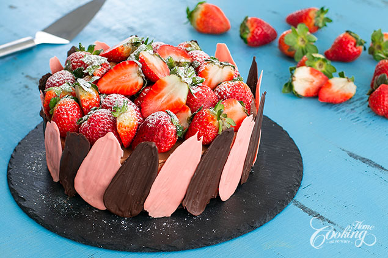

Brownie Strawberry Chocolate Cheesecake

This Strawberry Chocolate Cheesecake is one of the easiest desserts you can prepare for your loved ones… brownie at the bottom topped with fresh strawberries covered in a smooth silky chocolate cream cheese filling and decorated with chocolate brush strokes and fresh strawberries.
I know it may seem complicated but it’s really quite easy. The only baked part is the brownie which goes really fast. The chocolate cream cheese filling needs no gelatin as the chocolate plays this role of helping to set it up. Also it’s a great dessert you can prepare in advance. It’s quick, easy, it’s flavorful, full of color and quite impressive. Hope you’ll give it a try. Enjoy!
Prep time=50 mins + chilling time || Cook time=25 mins || Total time=1 hr 15 mins + chilling time
Ingredients
Makes about 10-12 servings
Cocoa Brownie
1/2 cup (110g) unsalted butter
3/4 cup (150g) sugar
1/2 cup (60g) unsweetened cocoa powder
1/2 tsp (2g) salt
1 tsp (5g) vanilla extract
2 eggs
1/2 cup (60g) all-purpose flour
Chocolate Cream Cheese Filling
7 oz (200g) semisweet chocolate, small pieces
1/2 cup (120g) whipping cream
1 pound (500g) cream cheese, room temperature
1/2 cup (60g) powdered sugar
2 tsp (10g) vanilla extract
1 cup (240g) whipping cream (35% fat), chilled
Strawberries for filling and decoration
10 oz fresh strawberries, for filling
15 oz (400g) fresh strawberries, for decoration
Chocolate Brush Strokes
2 oz (60g) semisweet chocolate
2 tbsp (20g) semisweet chocolate, for tempering
2 oz (60g) white chocolate
2 tbsp (20g) white chocolate, for tempering
Drop of red food coloring
Directions
Prepare cocoa brownie. Preheat oven to 320F (160C) and line the bottom of a 8 inch (20cm) pan with parchment paper. Place butter into a medium saucepan and melt over medium-low heat. Add sugar, salt, and cocoa powder. Mix to combine and remove from heat. Let cool slightly. Add vanilla extract and incorporate eggs one at time. Add flour and mix until well combined. Pour the batter into the prepared pan and bake for 20-25 minutes until a toothpick inserted into the center comes out clean or with few crumbs. Let the brownie cool completely in the pan. Prepare the chocolate cream cheese filling. Place chocolate and 1/2 cup (120ml) cream into a heatproof bowl and place over a pan with simmering water. Melt over low heat. Let cool at room temperature. In a large bowl mix cream cheese until smooth. Add powdered sugar and vanilla extract and mix to combine. Mix in melted chocolate and set aside. In another bowl mix chilled whipping cream until soft peaks form. Gently fold the whipped cream into the chocolate and cream cheese mixture. Assembly. Line the pan with some acetate sheet if desired, for easier removal. Spread a thin layer of the cream cheese filling over the cooled brownie and on the inner edges of the pan. Arrange strawberries in a single layer over the entire surface of the cake. Cover with the remaining chocolate cream cheese filling and smooth the top. Cover and refrigerate to set for 4-6 hours or overnight. Prepare chocolate brush strokes. Melt 2 oz (60g) semisweet chocolate over bain-marie. Remove from heat and add 2 tbsp (20g) chopped semisweet chocolate for tempering. Stir until melted. Pour spoonful of the melted chocolate onto a parchment paper lined baking sheet. Use the brush to spread the chocolate. The length of the brushstroke should be longer than the height of the cake. Repeat until all chocolate is used. I got around 15-16 pieces. Melt 2 oz (60g) white chocolate over bain-marie. Remove from heat and add 2 tbsp (20g) chopped white chocolate for tempering. Stir until melted. Add the red food coloring if desired. Pour spoonful of the melted chocolate onto a parchment paper lined baking sheet. Use the brush to spread the chocolate. The length of the brushstroke should be longer than the height of the cake. Repeat until all chocolate is used. I got around 15-16 pieces. Refrigerate for about 20-25 minutes to set. Remove parchment paper. Use melted chocolate to stick each brush stroke on the side of the cake. Refrigerate for 15 minutes to set the brush strokes. Cover the cake with fresh strawberries and dust with a bit of powdered sugar.
Nutrition facts
1 Serving out of 12 - Calories:534, Fat:39.5g, Saturated Fat:24.2g, Carbohydrates:44.1g, Sugar:32.7g, Fiber:4g, Protein:7.7g, Cholesterol:127mg, Sodium 271mg 12%, Vitamin D 8mcg 39%, Calcium 92mg 7%, Iron 2mg 13%, Potassium 338mg 7%